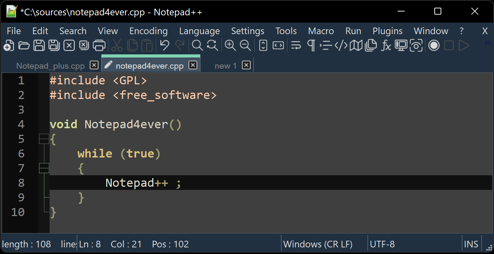

Notepad++
Modificare testo e codice su Windows con velocità, precisione e strumenti mirati.
Un editor piccolo con un compito preciso
Notepad++ è un editor di testo e codice per Windows: parte rapidamente, apre molti file e resta vicino al modello “file sul disco”.
Nativo Windows
È pensato per Windows e usa componenti Win32.
Testo semplice
Non introduce formati proprietari: modifica direttamente il contenuto del file.
Estendibile
Plugin e configurazioni aggiungono funzioni senza trasformarlo in un IDE.
Installazione normale o portatile
La versione installata integra associazioni e aggiornamenti; quella portatile vive in una cartella e può essere usata senza modificare stabilmente il sistema.
Comodo sul proprio PC; integrazione con Windows.
Utile su chiavetta o su macchine dove non vuoi installare.
Scarica soltanto dal sito ufficiale e verifica la firma del pacchetto.
L’interfaccia essenziale
Schede, area di testo, numeri di riga, barra di stato e menu: ogni elemento comunica lo stato del file.
Schede
Più file aperti; un indicatore segnala le modifiche non salvate.
Barra di stato
Codifica, fine riga, linguaggio, posizione del cursore e modalità di inserimento.
Mappa documento
Una vista ridotta aiuta a muoversi in file lunghi.

Sessioni, backup e file recuperati
Notepad++ riapre le schede lasciate aperte e conserva il testo non salvato: comodissimo, ma è una rete di sicurezza dell’editor, non un sistema di versioni.
La sessione
All’avvio ritrovi gli stessi file e la stessa posizione del cursore. Se lavori su cose diverse, sessioni separate evitano di riaprire trenta schede ogni volta.
Backup periodico
Nelle impostazioni si attiva il salvataggio automatico di copie di lavoro: recupera un file dimenticato dopo un riavvio improvviso, non un errore fatto tre giorni fa.
Un file “nuovo 1” mai salvato vive solo dentro la cartella di lavoro dell’editor: prima di modificarlo davvero, salvalo con un nome e in un percorso che sai ritrovare.
Colorazione sintattica, non comprensione
Il linguaggio selezionato decide colori, commenti e ripiegamento. La colorazione aiuta a leggere, ma non esegue né certifica il programma.
Cerca, sostituisci, conta
La ricerca è uno dei motivi principali per usare Notepad++ su log, configurazioni e grandi raccolte di testo.
Nel file
Trova successivo, precedente, evidenzia tutte le occorrenze.
In più file
Cerca dentro una cartella con filtri per estensione.
Sostituzione
Anteprima mentale obbligatoria: una regola troppo ampia cambia anche ciò che non volevi.
Muoversi dentro un file lungo
Su un file di migliaia di righe la differenza fra un lavoro di dieci minuti e uno di un’ora sta tutta nel modo in cui ci si sposta.
Cerca un termine, chiedi di segnare tutte le righe che lo contengono e ottieni una mappa dei punti da controllare, invece di scorrere a caso.
Marcano le righe importanti e permettono di saltare da una all’altra in sequenza.
Un errore segnalato da un programma indica quasi sempre un numero di riga: usalo invece di cercare a occhio.
La miniatura laterale mostra la forma del file: blocchi, righe lunghe e zone vuote diventano visibili.
Espressioni regolari con cautela
Le regex descrivono pattern. Sono potenti per trasformazioni ripetitive, ma una corrispondenza imprecisa moltiplica l’errore.
Trova: ^\s*#.*$\R? Sostituisci: [vuoto] Obiettivo: rimuovere righe di commento che iniziano con #
Lavora su una copia, prova “Trova tutto”, controlla alcuni casi e soltanto dopo usa “Sostituisci tutto”.
Colonne e selezioni multiple
Con Alt e trascinamento puoi selezionare una colonna; con più cursori applichi la stessa modifica in punti diversi.
Dati allineati
Inserire o togliere caratteri nella stessa posizione di molte righe.
Prefissi e suffissi
Aggiungere virgolette, separatori o marcatori in serie.
Limite
Su dati strutturati complessi è più affidabile uno script verificabile.
Codifiche e caratteri invisibili
UTF-8, ANSI e altre codifiche interpretano gli stessi byte in modi diversi. Cambiare etichetta non equivale sempre a convertire.
UTF-8
Scelta moderna e interoperabile per testo e codice.
BOM
Una firma iniziale che alcuni strumenti richiedono e altri non gradiscono.
Fine riga
Windows usa CRLF; Unix/Linux usa LF. Notepad++ può mostrare e convertire.
Fine riga: CR LF oppure LF
Ogni riga termina con caratteri invisibili. Windows ne usa storicamente due, i sistemi Unix uno solo: quando i due mondi si incontrano, il file “sembra rotto” senza esserlo.
nome;quantita[CR][LF] ← formato Windows nome;quantita[LF] ← formato Unix, usato da Linux, macOS e dal web Barra di stato: Windows (CR LF) | Unix (LF) Menu Modifica → Conversione formato fine riga
Un file caricato su un server, importato da un gestionale o versionato con Git può cambiare formato lungo la strada: se un programma legge “una riga sola” o mostra quadratini a fine riga, il colpevole è quasi sempre questo.
Confrontare due versioni
Il plugin Compare visualizza differenze fra file. È utile per configurazioni e piccoli testi, ma non sostituisce la cronologia di Git.
Contenuto presente prima e non dopo.
Contenuto nuovo nella seconda versione.
Riga simile, ma non identica.
Macro e operazioni ripetitive
Una macro registra una sequenza di tasti e comandi e la ripete. Funziona bene quando la struttura è regolare.
Registra
Esegui una volta l’operazione corretta.
Prova
Ripeti su poche righe e controlla il risultato.
Automatizza
Per logiche con condizioni, passa a uno script: sarà più leggibile e testabile.
Plugin: pochi e motivati
Il sistema di plugin estende l’editor con confronto, gestione file, anteprime e strumenti di testo.
Origine
Installa dal gestore integrato o da progetti verificabili.
Manutenzione
Un plugin non aggiornato può rompersi dopo un update.
Superficie di rischio
Ogni estensione esegue codice: installa solo ciò che serve.
Quando il file è troppo grande
Un editor tiene il documento in memoria e lo colora tutto: superata una certa dimensione, ogni operazione diventa lenta o rischiosa.
I sintomi
Apertura lentissima, ricerche che bloccano la finestra, colorazione che sparisce, memoria che cresce fino all’errore. Su registri da centinaia di megabyte è la norma, non un difetto.
Gli strumenti giusti
Disattivare la colorazione, aprire solo la parte che serve, estrarre le righe utili con un comando di filtro o usare un visualizzatore pensato per file enormi.
Quando scegliere Notepad++
È particolarmente adatto a modifiche rapide, ispezione di log e trasformazioni testuali su Windows.
Sceglilo
Avvio rapido, file singoli, ricerca potente, lavoro offline.
Affiancalo
Può restare accanto a un IDE per controlli e ritocchi veloci.
Non forzarlo
Progetti grandi, debug integrato e refactoring profondo richiedono altri strumenti.
Notepad++: ora sai scegliere.
Modificare testo e codice su Windows con velocità, precisione e strumenti mirati.